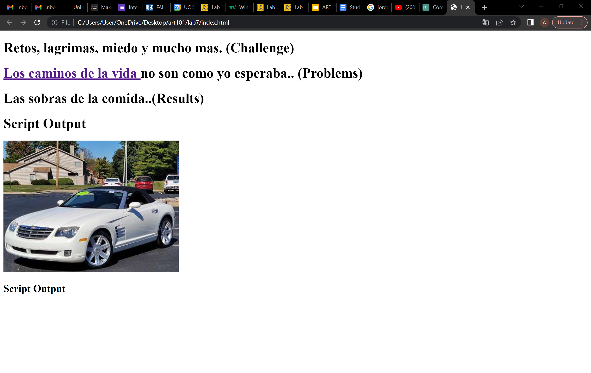
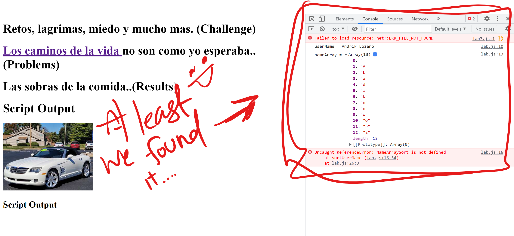
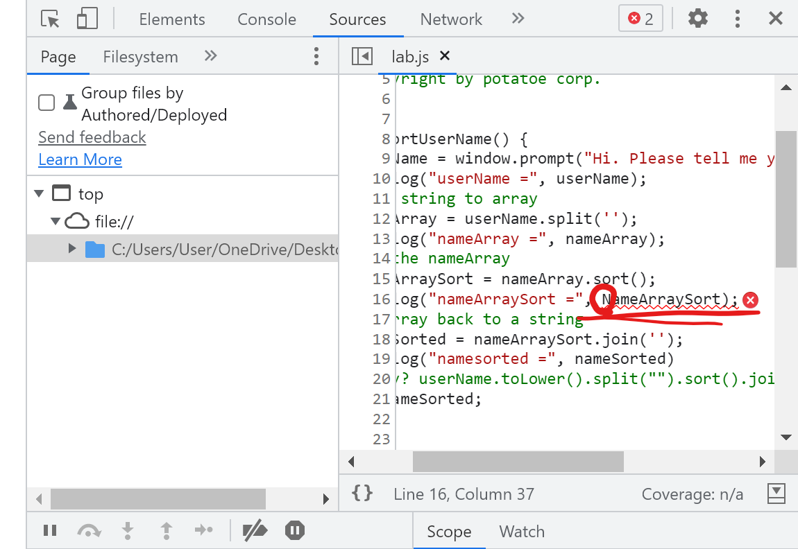
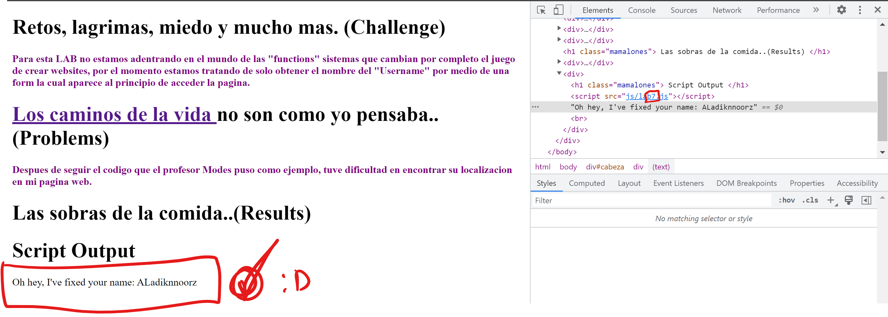
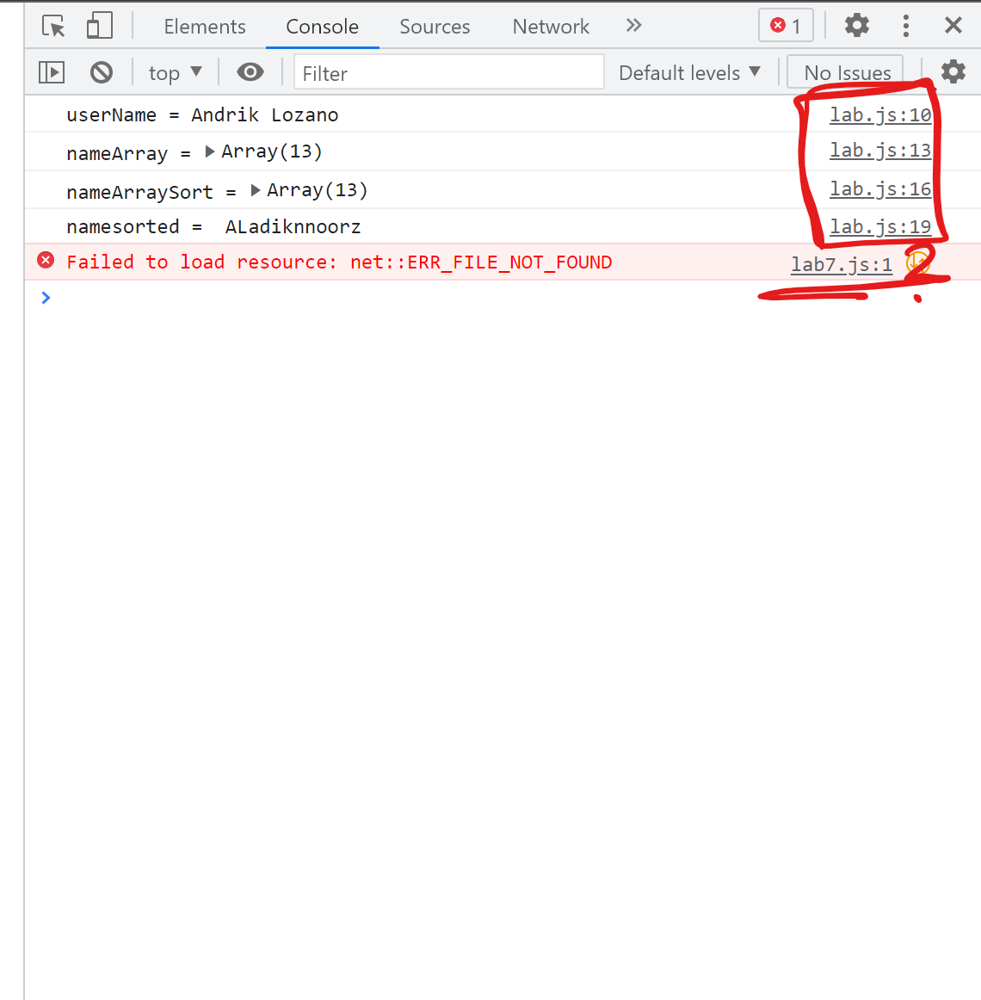
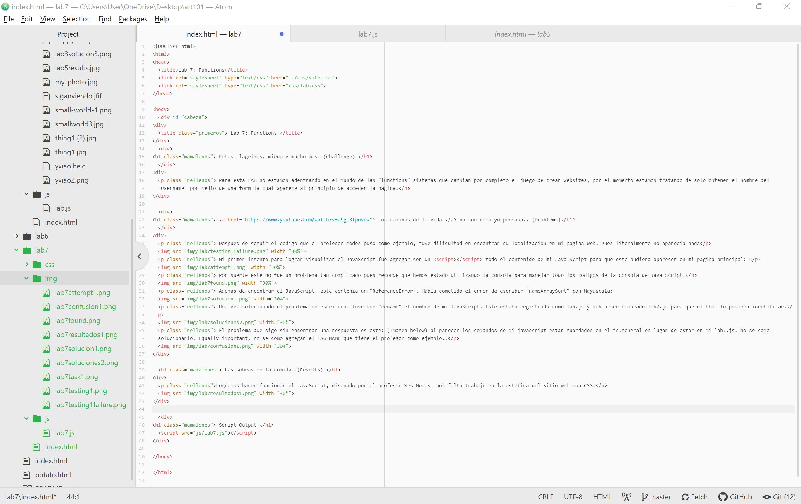

Retos, lagrimas, miedo y mucho mas. (Challenge)
Para esta LAB no estamos adentrando en el mundo de las "functions" sistemas que cambian por completo el juego de crear websites, por el momento estamos tratando de solo obtener el nombre del "Username" por medio de una form la cual aparece al principio de acceder la pagina.
Los caminos de la vida no son como yo pensaba.. (Problems)
Despues de seguir el codigo que el profesor Modes puso como ejemplo, tuve dificultad en encontrar su localizacion en mi pagina web. Pues literalmente no aparecia nada
Mi primer intento para lograr visualizar el JavaScript fue agregar con un "script" todo el contenido de mi Java Script para que este pudiera aparecer en mi pagina principal:

Por suerte este no fue un problema tan complicado pues recorde que hemos estado utilizando la consola para manejar todo los codigos de la consola de Java Script.
Ademas de encontrar el JavaScript, este contenia un "ReferenceError". Habia cometido el error de escribir "nameArraySort" con Mayuscula: 
Una vez solucionado el problema de escritura, tuve que "rename" el nombre de mi JavaScript. Este estaba registrado como lab.js y debia ser nombrado lab7.js para que el html lo pudiera identificar.
El problema que sigo sin encontrar una respuesta es este: (Imagen below) al parecer los comandos de mi javascript estan guardados en el js.general en lugar de estar en mi lab7.js. No se como solucionarlo. Equally important, no se como agregar el TAG NAME que tiene el profesor como ejemplo..
Las sobras de la comida..(Results)
Logramos hacer funcionar el JavaScript, disenado por el profesor Wes Modes, nos falta trabajr en la estetica del sitio web con CSS.
